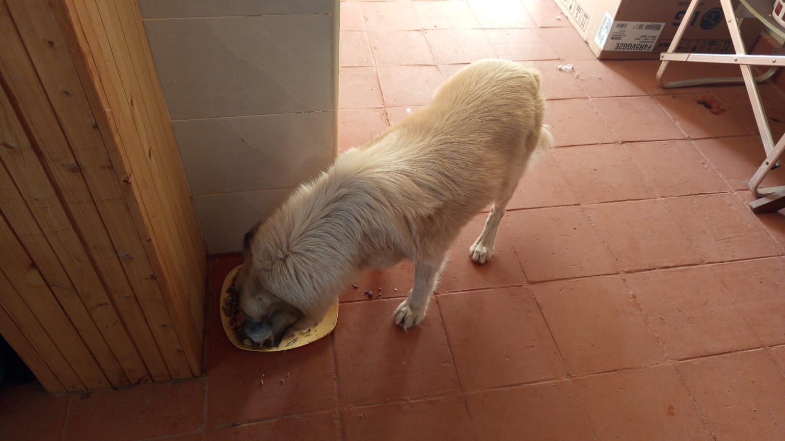

Mucheru World of Golf
Operations on Wednesday, 7th October 2026 concentrated on critical hydraulic reservoir lining, perimeter anchor trench securing, and teebox playing platform refinement across the championship course:
Mucheru World of Golf Operations Summary
Dam 2 connecting liner welding reached 90% completion, leaving only the upper embankment sections, with liner edges safely tucked into perimeter anchor trenches to secure the basin against rain; Teeboxes 13 and 14 were completely finished and refined; Teebox 12 women's platform was fully shaped and refined, with the men's tee actively progressing; and stored water volumes across Dam 1 and Dam 3 were actively verified.
- Dam 2 Polythene Liner Welding (90% Completed): Early morning inspection observed dirty runoff water pooled across the bare unlined earthen basin floor following overnight rains. During the day, the specialized liner crew deployed the heavy-duty polythene dam liner sheets and made massive headway joining seams across the basin floor. Thermal seam welding is now 90% complete across the reservoir floor, with only the upper embankment sections remaining. With liner edges tucked into the anchor trenches and 90% of seams welded, there is no more worry about rain on Dam 2.
- Dam 2 Perimeter Anchor Trench Tucking: Manual labor crews systematically tucked the edges of the polythene liner into the perimeter anchor trenches dug along the top circumference of Dam 2. Tucking the liner into the trench anchors the sheets firmly against wind displacement and locks the liner securely prior to soil backfill.
- Teebox 14 Platform Finished & Refined: Earthworks on Teebox 14 were brought to 100% completion today. Field crews finished cutting, grading, shaping, and precision refining the launch platform to its final architectural contours and playing elevation.
- Teebox 13 Platform Finished & Refined: Teebox 13 playing platform was thoroughly fine-tuned and refined. Embankments and playing surfaces were leveled to exact specifications, completing the platform earthwork phase.
- Teebox 12 Dual Platform Progression: On Teebox 12, the forward women's teebox platform was completely shaped and refined to finished grade. Work on the primary men's championship platform is actively underway and nearing completion.
- Dam 1 & Dam 3 Hydraulic Water Reserves: Dam 1 and Dam 3 reservoirs continue to securely store accumulated water inflow from recent rains, confirming sound containment integrity across the completed lined reservoirs.
Field video documentation capturing Wednesday's operations at Mucheru World of Golf: thermal heat welding of polythene dam liner sheets across Dam 2 (90% complete), manual perimeter anchor trench tucking along the embankment circumference, water storage in Dam 1 and Dam 3 reservoirs, and finished platform shaping on Teeboxes 12, 13, and 14.
18-hole putting green status audit showing the latest work completed and current condition for each green as of October 7, 2026:
| Green | Current Technical & Agronomic State | Milestone Status |
|---|---|---|
| Green 1 | Surplus red soil (from 1 truck delivery) applied and leveled around collar and surrounds (Oct 2). | Surplus Red Soil Applied |
| Green 2 | Surplus red soil (from 1 truck delivery) applied and leveled around collar and surrounds (Oct 2). | Surplus Red Soil Applied |
| Green 3 | Surplus red soil (from 1 truck delivery) applied and leveled around collar and surrounds (Oct 2). | Surplus Red Soil Applied |
| Green 4 | Outlet drainage trench excavated across fairway corridor to safely discharge runoff (Oct 5). | Outlet Drainage Dug |
| Green 5 | Sprinklers turned on for active turf irrigation over 100% established grass (Oct 4). | Sprinklers Running |
| Green 6 | Surplus red soil applied to raise and level surrounds (Sep 28). | Apron Raised • Palms Placed |
| Green 7 | Shape designed and contoured with pumice bed per Joe Kamau's layout; sand delivered (Oct 4). | Shape Designed • Pumice Leveled |
| Green 8 | Surplus red soil spread and leveled around surrounds per Joe's instructions (Oct 1). | Surplus Red Soil Applied |
| Green 9 | Surplus red soil (from 1 truck delivery) applied and leveled around collar and surrounds (Oct 2). | Surplus Red Soil Applied |
| Green 10 | Surplus red soil (from 1 truck delivery) applied and leveled around collar and surrounds (Oct 2). | Surplus Red Soil Applied |
| Green 11 | Riversand application in progress over pumice bed; partial coverage completed (Oct 3). | Riversand in Progress |
| Green 12 | Surplus red soil (from 1 truck delivery) applied and leveled around collar and surrounds (Oct 2). | Surplus Red Soil Applied |
| Green 13 | Surplus red soil spread around surrounds to raise and match green level (Sep 29). | Surplus Red Soil Applied |
| Green 14 | Surplus red soil spread around surrounds to build up perimeter level (Sep 29). | Surplus Red Soil Applied |
| Green 15 | Riversand applied over pumice bed across most part of green (Oct 3). | Riversand Applied (Most Part) |
| Green 16 | Surplus red soil spread around surrounds to blend with fairway (Sep 29). | Surplus Red Soil Applied |
| Green 17 | Surplus red soil spread around surrounds to raise and align levels (Sep 29). | Surplus Red Soil Applied |
| Green 18 | Surplus red soil spread and leveled around collar and surrounds (Sep 30). | Surplus Red Soil Applied |
Comprehensive 18-hole championship teebox platform audit tracking earthwork leveling, structural embankments, and playing corridor alignments as of October 7, 2026:
| Teebox | Current Technical & Earthwork State | Platform Status |
|---|---|---|
| Tee 1 | Championship launch platform completely reshaped, cut, and graded to design elevation using Backhoe Loader (Sep 24); received 1 lorry red soil delivery (Sep 26). | Platform Reshaped |
| Tee 2 | Playing launch platform completely reshaped, contoured, and graded using Backhoe Loader (Sep 24); received 1 lorry red soil delivery (Sep 26). | Platform Reshaped |
| Tee 3 | Playing launch platform completely reshaped, contoured, and graded using Backhoe Loader (Sep 24); received 1 lorry red soil delivery (Sep 26). | Platform Reshaped |
| Tee 4 | Championship launch platform completely reshaped, cut, and graded using Backhoe Loader (Sep 23); received 1 lorry red soil delivery (Sep 26). | Platform Reshaped |
| Tee 5 | Main perimeter drainage pipeline backfilled all the way past Maina's place (Oct 2). | Drainage Backfilled |
| Tee 6 | Precision leveling and compaction completed; fresh delivery of 1 lorry red loam topsoil unloaded at platform surrounds (Sep 26). | Red Soil In • Leveled |
| Tee 7 | Both number 7 teebox platforms actively reshaped, cut, and leveled by crew under Joe Kamau and supervisors (Oct 4). | Both Platforms Reshaped |
| Tee 8 | Graded, leveled, and contour-adjusted; fresh delivery of 1 lorry red loam topsoil unloaded directly on platform (Sep 26). | Red Soil In • Graded |
| Tee 9 | Playing platform leveled and surrounding perimeter ground graded (Sep 1); received 1 lorry red soil delivery (Sep 26). | Platform Leveled |
| Tee 10 | Graded and compacted platform serving the start of the back-nine playing corridor; received 1 lorry red soil delivery (Sep 26). | Platform Compacted |
| Tee 11 | Rough shaping, elevation grading, and Backhoe subsoil leveling completed (Sep 7); received 1 lorry red soil delivery (Sep 26). | Shaped & Graded |
| Tee 12 Today | Women's forward teebox platform shaped and refined fully; men's platform shaping actively underway and nearing completion (Oct 7). | Women's Done • Men's in Progress |
| Tee 13 Today | Playing platform earthworks completely finished, shaped, and refined to final design elevation and contours (Oct 7). | Finished & Refined |
| Tee 14 Today | Launch platform earthworks completely finished, shaped, and refined to final playing contour (Oct 7). | Finished & Refined |
| Tee 15 | Launch platform shaping completely finished; terrace cut to design elevation and precision leveled (Oct 6). | Platform Reshaped |
| Tee 16 | Surplus red soil moved onto platform; launch terrace completely reshaped and leveled (Oct 5). | Platform Reshaped |
| Tee 17 | Launch platform reshaped, cleared of brush, and graded to playing corridor alignment (Oct 6). | Platform Reshaped |
| Tee 18 | Championship tee platform leveled; perimeter approach cleared and graded (Sep 1); received 1 lorry red soil delivery (Sep 26). | Platform Leveled |
Operations Agronomy & Engineering Synthesis
Putting Greens & Hydraulic Progress: 18 of 18 greens (100%) have subgrade foundations excavated and membrane lined; 18 of 18 (100%) have volcanic pumice layers compacted; all 18 greens (100%) have completed surplus red soil application; Dam 2 geomembrane liner thermal heat welding reached 90% completion with perimeter anchor trench tucking securing the basin against rain; Dam 1 and Dam 3 actively hold and preserve water reserves.
Championship Teebox Platforms: Teebox 13 and Teebox 14 platforms are 100% finished and refined; Teebox 12 women's platform is fully shaped and refined with the men's platform actively progressing; Teeboxes 15, 16, and 17 platforms previously reshaped and contoured.
Sequential photographic field documentation covering Dam 2 polythene liner placement, thermal seam welding, perimeter anchor trench tucking, Dam 1 and Dam 3 water status, and finished shaping on Teeboxes 12, 13, and 14:

Dam 2 Hydraulic Works — Liner Deployment Across Basin
Aerial perspective of Dam 2 showing deployed heavy-duty black polythene liner sheets smoothly covering the excavated reservoir floor and sloping banks.

Dam 2 Hydraulic Works — Liner Edges Tucked in Perimeter Trench
High aerial perspective capturing the top circumference of Dam 2, where the polythene liner edges are neatly tucked into the dug perimeter anchor trench.

Dam 2 Lining — Thermal Hot-Air Seam Welding
Installation technician kneeling on the polythene sheet operating the electric thermal hot-air welding machine to fuse overlapping liner seams into a watertight barrier.

Dam 2 Lining — Seam Connections & Reservoir Coverage
Wide high-angle aerial view of Dam 2 highlighting the extensive seam welding progress across the expansive basin floor, advancing toward 90% completion.

Dam 2 Works — Edge Tucking & In-Basin Liner Connection
Drone overview capturing the perimeter crew tucking liner edges into the top trench while two crewmen work down inside the basin connecting and aligning liner sheets.

Dam 2 Liner — Welded Seams Along Embankment
Close-up view of the smoothly welded polythene membrane extending up the curved embankment of Dam 2, showing excellent joint continuity.

Dam 2 Morning Condition — Dirty Rainwater Pooled Prior to Liner Placement
Morning field view of Dam 2 following overnight rainfall, showing dirty runoff water pooled across the bare unlined earthen basin floor before the polythene dam liner was deployed, tucked, and welded later in the day.

Dam 2 Progress — Coordinating Liner Alignment
Field view of Dam 2 basin with workers coordinating liner placement and joint alignment across the base and lower slopes.

Dam 1 Hydraulic Status — Substantial Water Retention
Expansive aerial survey of Dam 1 displaying a large volume of impounded rainwater safely contained within the geomembrane lined reservoir.

Dam 1 Reservoir — Surface Water Storage
Water-level perspective across Dam 1 showing stable stored water reserves surrounded by manicured course fairways and green surrounds.

Dam 3 Aerial Status — Impounded Water Reserves
Elevated aerial survey of Dam 3 capturing the steady accumulation of irrigation water across its lined basin framed by native woodland.

Teebox 14 Platform — Finished & Precision Refined
Aerial view of Teebox 14 showing the completely finished launch platform with cleanly contoured perimeter batters and leveled playing surface.

Teebox 14 Earthworks — Final Platform Shaping
Ground perspective of manual workers finishing up the shaping and edge refinement of Teebox 14 alongside boundary trees.

Teebox 13 Platform — Finished & Refined Elevation
Elevated drone view of Teebox 13 displaying the fully finished and refined teebox platform, aligned precisely with the fairway playing corridor.

Teebox 12 — Women's Platform Fully Shaped & Refined
Aerial view of Teebox 12 showing the fully shaped and refined women's launch platform, with the men's platform actively progressing nearby.

Teebox 12 Shaping — Edge Contouring & Refinement
Field workers using hand tools to shape and refine the sloping embankment edges of Teebox 12 to ensure smooth transition to fairway surrounds.

Course Architecture — Precision Teebox Hand Trimming
Artisans with jembes and shovels meticulously trimming, shaving, and leveling the playing platform terrace to ensure flawless drainage slope and flat launch lie.
Chaka Farms
Operations at Chaka Farms on Wednesday, 7th October 2026 maintained high agronomic and livestock productivity, featuring reconciled milk production, canine behavioral conditioning, greenhouse structural maintenance, and field crop preparations:
Chaka Farms Operations Summary
Dairy milking yielded 7.0 Litres gross with 100% mathematical reconciliation (6.0L commercial sales, 1.0L internal staff allocations; goat kids fully weaned); Willy conducted kennel manners, patience and obedience drills, morning goat socialization walks, and an afternoon off-leash pine plantation pack walk; Margaret and Monica maintained compound cleanliness and dug planting holes with manure for maize seedlings; and greenhouse structural repairs were carried out.
- Reconciled Dairy Production (Kamandau): Morning milking yielded 5.0 Litres and evening milking yielded 2.0 Litres, totaling 7.0 Litres gross harvest. Commercial sales dispatches stood at 4.0L morning and 2.0L evening (6.0L daily total sold). Routine internal farm disbursements accounted for 1.0L (0.5L Gladys staff ration + 0.5L Maasai security ration), resulting in 100% accounting fidelity with zero discrepancy. Goat kids remain officially weaned (0.0L allocation).
- Canine Behavioral Conditioning & Livestock Socialization (Willy): Willy conducted structured training sessions with the Canine Unit. Morning routines focused on kennel manners (gate boundary control and calm threshold waiting) and patience/obedience drills. The working dogs completed a socialization and exercise walk alongside farm goats, reinforcing calm temperament around livestock. In the afternoon, Willy led the pack on an off-leash walk through the farm's pine plantation, where all five White Swiss Shepherds demonstrated excellent pack manners, down-stays, and sitting control.
- Greenhouse Structural Maintenance: Farm workers carried out structural repairs on the curved tunnel greenhouse, using scaffolding pipe staging and an aluminum extension ladder to secure, tension, and fix the heavy-duty translucent polyethylene covering film.
- Field Agronomy & Planting Preparation (Margaret & Monica): Margaret and Monica performed thorough compound cleaning and sweeping routines. In the agricultural plots, workers dug additional planting holes for maize seedlings and applied organic farm manure into each hole before planting to enrich soil fertility.
Quantitative reconciliation of gross dairy harvest, commercial sales dispatches, and internal farm allocations for Wednesday, 7th October 2026:
| Production & Allocation Category | Morning Session | Evening Session | Daily Total | Accounting Classification |
|---|---|---|---|---|
| Commercial Milk Sales (Dispatched) | 4.0 L | 2.0 L | 6.0 L | Commercial Sales Outflow |
| Goat Kids Milk Ration | 0.0 L | — | 0.0 L | Weaned (Fully Grown & Independent) |
| Gladys Allocation (Staff) | 0.5 L | — | 0.5 L | Internal Farm Allocation (Staff) |
| Maasai Allocation (Security) | 0.5 L | — | 0.5 L | Internal Farm Allocation (Security) |
| Total Internal Farm Allocations | 1.0 L | Total Internal Outflow | ||
| Total Gross Cow Milk Harvested (Sales + Allocations) | 7.0 L | 100% Accounted Production (5.0L AM / 2.0L PM) | ||
📌 Ground Truth Accounting Note
In accordance with the estate milk reconciliation standard established on October 1st, Kamandau's recorded dispatches of 4.0L morning and 2.0L evening represent commercial milk sold (6.0L total). Internal disbursements comprise 0.5L morning staff ration for Gladys and 0.5L morning security ration for Maasai (1.0L total internal allocations). The goat kids are fully weaned and graze independently (0.0L allocation). Total gross cow milk harvested is exactly 7.0 Litres (5.0L morning harvest + 2.0L evening harvest) with 100% accounting fidelity and zero discrepancy.
Daily behavioral conditioning, impulse-control drills, livestock socialization, and woodland pack exercise conducted on Wednesday, 7th October 2026:
- Kennel Manners & Gate Control: Working dogs underwent focused behavioral conditioning reinforcing kennel patience, boundary manners, and calm waiting behavior at stall gates before release.
- Patience, Focus & Obedience Conditioning: Impulse-control drills testing down-stay endurance, handler eye contact, and prompt release execution under handler cues.
- Livestock Socialization Walk with Goats: Morning walk conducted alongside farm goats to habituate the dogs to farm livestock, ensuring calm, neutral demeanor without chasing or agitation.
- Afternoon Off-Leash Woodland Pack Exercise: Off-leash pack walk across the farm pine plantation, reinforcing synchronized down-stays, alert sitting formations, and trail recall.
Willy conducting kennel manners, boundary respect, and structured entry drills with the Canine Unit, reinforcing calm demeanor and handler attentiveness.
Impulse-control and focus training overseen by Willy, testing down-stay endurance, handler eye contact, and prompt release execution.
Sequential photographic field documentation covering the Canine Unit's afternoon off-leash pine plantation exercise and tunnel greenhouse structural maintenance:

Canine Unit Training — Synchronized Down-Stay in Pine Grove
All five White Swiss Shepherds holding a calm, synchronized down-stay position along the needle-strewn forest path during afternoon exercise.
.jpeg)
Pack Discipline — Attentive Sitting Command Formation
The Canine Unit pack sitting alertly in formation along the pine tree corridor with leashes placed loosely on the ground under Willy's supervision.
.jpeg)
Woodland Field Drill — Alert Posture & Forward Focus
Close cluster of the five White Swiss Shepherds exhibiting calm demeanor, erect ears, and keen handler responsiveness during the farm trail walk.

Afternoon Woodland Exercise — Pack Conditioning
Vertical perspective of the Canine Unit resting calmly in a unified group along the shaded pine avenue following obedience and walking exercises.

Greenhouse Maintenance — Polyethylene Sheeting & Scaffolding
Farm worker in a branded Chaka Farms cap standing by scaffolding pipe staging and an aluminum ladder, securing and fixing the tunnel greenhouse sheeting.

Facility Infrastructure — Tunnel Greenhouse Elevation
Vertical view of the curved tunnel greenhouse entrance, structural roll-up framing, and staging area set against the pine tree boundary.
Kabete Residence
Field operations at Kabete Residence on Wednesday, 7th October 2026 registered major progress across civil structural works down in the forest corridor, property maintenance, and domestic pet welfare. Daily operational updates were overseen and shared by Njoki:
Kabete Residence Progress Summary
Steel artisans shaped and bent reinforcement stirrup rings along the forest slope retaining wall stone footing; column rebar cages were assembled and positioned in basement compartments; stone masonry walls were water-cured; outdoor patio wicker seating was scrubbed and dried; and complete pet care was provided for Ajabu and resident cats.
- Forest Retaining Wall Rebar Stirrup Fabrication: Down along the steep forest slope descending toward the river corridor, steel artisans actively shaped, bent, and tied heavy steel reinforcement bars and stirrup rings directly along the top edge of the stone foundation footing. These stirrups and longitudinal bars reinforce the structural retaining wall designed to permanently stabilize the excavated earthen cut.
- Column Rebar Cage Fabrication & Positioning: Artisans prefabricated and assembled rectangular steel rebar column cages with tied stirrups on site. The vertical cages were hoisted into position at structural wall corners and compartment junctions within the excavated forest basement masonry structure, preparing the columns for concrete encasement.
- Quarry Stone Masonry Water Curing: To ensure high structural integrity and complete mortar hydration, artisans conducted continuous water curing on the freshly constructed quarry stone masonry walls using a garden hose line, thoroughly saturating the stone joints.
- Outdoor Furniture Restoration & Cleaning: General property maintenance included the complete washing of outdoor living furniture. Remaining black woven all-weather wicker armchairs were thoroughly scrubbed, washed, and inverted on the garden terrace to air dry.
- Domestic Pet Care & Exercise (Ajabu & Resident Cats): Complete daily pet care routines were executed for Kabete’s domestic pets. Ajabu the Golden Retriever enjoyed a wholesome cooked meal on the terracotta tiled floor and was guided on daily on-leash exercise along the estate’s brick-paved driveway, exploring garden borders. Resident cats (Reo, Mocha, and Aiko) were fed together from their individual stainless steel dishes alongside fresh water.
Sequential photographic field documentation covering retaining wall rebar stirrup fabrication, column cage positioning, stone masonry water curing, patio seat cleaning, and domestic pet care:

Forest Retaining Wall — Stirrup Rings & Rebar Bending
Artisans in high-vis vests and overalls bending and tying steel stirrup rings along the top of the masonry retaining wall footing against the steep red soil cut.

Structural Steel Detail — Retaining Wall Stirrups & Bars
Close-up view of tied steel stirrup rings and longitudinal reinforcement bars seated along the stone foundation wall to permanently stabilize the river forest embankment.

Civil Structural Works — Stacked Column Rebar Cages
Prefabricated rectangular steel rebar column cages with tied stirrups neatly stacked on site ground near safety railings, ready for structural installation.

Basement Structure — Column Rebar Cage at Wall Junction
Vertical steel rebar column cage positioned plumb at a quarry stone masonry wall corner under the concrete upper slab overhang.

Basement Foundation Pit — Masonry Compartments & Columns
Elevated perspective into the excavated forest basement pit showing masons inside stone wall compartments, with vertical rebar column cages aligned at intersections.

Site Overview — Forest Retaining Wall & Basement Framing
Wide elevated angle of the basement foundation and retaining masonry structure nestled in the forest slope, with work crews coordinating column steel placements.

Masonry Curing — Water Hose Spraying on Stone Walls
Artisan in an orange jumpsuit using a garden hose to thoroughly drench and cure freshly constructed quarry stone walls, while a mason lays stone courses in background.

Structural Hydration — Saturated Quarry Stone Masonry
Quarry stone masonry walls showing thorough water saturation from ongoing curing, with mason, mortar pans, and vertical rebar ties visible in the pit.

Estate Maintenance — Patio Wicker Seat Washed & Drying
All-weather black woven wicker armchair inverted on the garden terrace to air dry following thorough cleaning and washing.

Canine Wellness — Ajabu On-Leash Driveway Exercise
Ajabu the Golden Retriever on a patterned lead walking forward calmly along the estate's brick-paved driveway.

Daily Conditioning — Ajabu Exploring Garden Borders
Ajabu exploring perimeter garden shrubbery during his guided on-leash walk, maintaining excellent manners and outdoor enrichment.

Domestic Pet Care — Ajabu Enjoying Wholesome Meal
Ajabu enjoying a nutritious cooked meal served on a plate on the indoor terracotta tiled floor at Kabete Residence.

Feline Nutrition — Resident Cats Reo, Mocha & Aiko Feeding
All three resident cats (Reo, Mocha, and Aiko) feeding simultaneously from individual stainless steel dishes beside fresh water on the terracotta tiled floor.
Amani Cottage
Daily property care and upkeep at Amani Cottage on Wednesday, 7th October 2026 maintained pristine standards across outdoor garden grounds, flowering pergolas, and indoor accommodations:
Amani Cottage Progress Summary
Edwin swept entrance driveways, circular stone stepping paths, and lawns; tree protective netting was maintained; climbing orange flowering trumpet creepers on the timber pergola were checked; and domestic interior housekeeping kept accommodations guest-ready.
- Grounds Sanitation & Lawn Care (Edwin): Edwin thoroughly swept the cottage entrance driveways, stepping stone pathways, and perimeter garden lawns. Fallen leaves, twigs, and loose litter were cleared to maintain spotless landscaping.
- Arboriculture & Pergola Care: Garden trees with protective trunk netting were inspected, and the timber pergola supporting vibrant orange flowering trumpet vines over the paved parking/patio court was maintained in excellent order.
- Domestic Interior Housekeeping: Routine housekeeping was executed inside the cottage, covering surface dusting, floor sweeping, and maintaining tidy guest accommodations.
Sequential photographic field documentation showing the pristine manicured grounds, stepping stone paths, rustic stone-and-timber cottage facade, and flowering timber pergola:
.jpeg)
Estate Grounds — Manicured Lawn & Stepping Stones
Shaded perspective through mature garden trees showing the cleanly swept green lawn and circular stone stepping path traversing the cottage grounds.
_01.jpeg)
Cottage Facade — Stone Chimney & Garden Terrace
Vertical frontal view of Amani Cottage highlighting the stone fireplace chimney, upper timber balcony, ground patio with hanging wicker egg chairs, and rockery garden.
_02.jpeg)
Landscape Care — Tree Canopy & Lawn Perimeter
Tree canopy shadows cast across the manicured turfgrass lawn along the side garden boundary, showing protective tree trunk mesh and clean garden verges.
_03.jpeg)
Garden Feature — Flowering Timber Pergola
Rustic log pergola with green shade netting and blooming orange flowering trumpet creepers shading the green-tinted stone-paved patio parking area.
_04.jpeg)
Grounds Perspective — Stepping Pathway to Cottage
Long perspective capturing the circular stepping stone path leading across the sunlit lawn toward the entrance veranda of Amani Cottage.
_05.jpeg)
Garden Vista — Swept Lawn & Ornamental Borders
Wide view of the immaculately swept lawn framed by mature indigenous trees, manicured shrubs, and lush natural woodland surrounds.